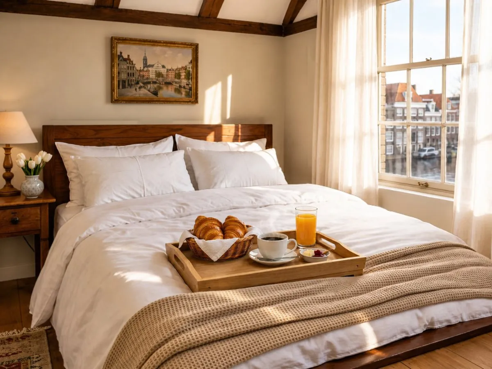
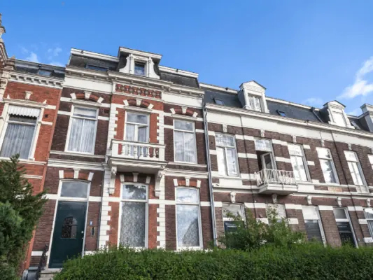
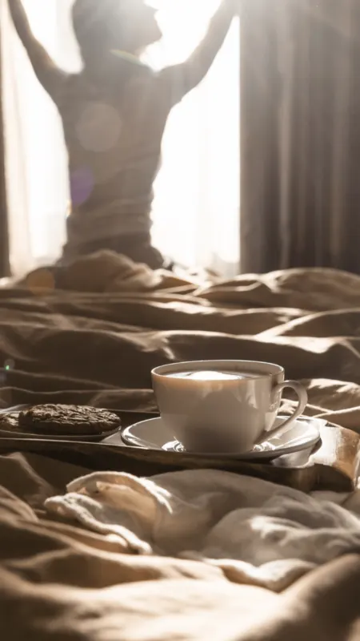

Gids
B&B in Nijmegen
Bijgewerkt op
In het kort: Deze gids zet de leukste bed and breakfasts in Nijmegen en de dorpen eromheen op een rij, waaronder Nijmegen-Oost, Groesbeek en Wijchen. Een B&B is persoonlijker dan een hotel: de gastheer of gastvrouw kent de omgeving.
Een B&B in Nijmegen is persoonlijker dan een hotel: je slaapt bij een gastheer of gastvrouw die de stad kent, en het ontbijt is vaak een feestje. In Nijmegen zijn er bed and breakfasts in het centrum, in Bottendaal bij het station, in Nijmegen-Oost, bij het Radboudumc en in Lent.
Hieronder staan alle B&B's in Nijmegen per buurt, en daarna onze tips voor Nijmegen-Oost, Groesbeek en Wijchen. Kom je rond de Vierdaagse in juli? Boek dan ruim op tijd.
Alle B&B's in Nijmegen per buurt
Dit zijn de bed and breakfasts in Nijmegen uit onze bedrijvengids. Klik op een naam voor het adres, de kenmerken en de website. Meer uitleg per adres lees je in de leukste B&B per wijk.
Centrum en aan de Waal
- Opoe Sientje: slapen op een schip uit 1885 in de Lindenberghaven
- de Smedery: appartementen voor twee tot acht personen aan de Ooysedijk
- B&B WestZijde: statig huis uit 1870 met een grote tuin aan de Graafseweg
Bottendaal, bij het station
- Pension Bottendaal: negen kamers, een paar minuten lopen van het station
- B&B Jan van Galen: souterrain in een negentiende-eeuws huisje, zonder ontbijt
Nijmegen-Oost
- B&B Hunnerzijds: eigen ingang en keukentje aan de Berg en Dalseweg
- Let it B&B: eigen ingang en fietsenstalling in de Van den Havestraat
- Huize Nijmegen: herenhuis uit 1893 aan de Groesbeekseweg, ontbijt op je kamer
Bij het Radboudumc en de Goffert
- Aan de Anna: tegenover het Radboudumc, met een rolstoeltoegankelijke kamer
- B&B De Goffert: appartement voor vier vlak bij het Goffertpark
- De Pauwenhof: compleet appartement aan de Kastanjelaan
Lent, aan de overkant van de Waal
- Pipowagen Lent: slapen in een pipowagen bij de uiterwaarden
- Het Laauwik: zelfstandig verblijf in de schuur van een boerderij uit 1874
Alle adressen op de kaart staan in de bed and breakfasts in onze bedrijvengids.
B&B's in Nijmegen en omgeving
In de stad, in de heuvels van Groesbeek of bij het kasteel van Wijchen.

Bed and breakfast in Nijmegen: de leukste B&B per wijk
Een bed and breakfast in Nijmegen per wijk: op een schip in de haven, in Bottendaal bij het station, in Oost bij de Sint Maartenskliniek, bij het…

De leukste B&B’s in Nijmegen oost
Overnachten in Nijmegen-Oost? Dit zijn de leukste bed and breakfasts in Bottendaal, Altrade en omgeving, dicht bij centrum en natuur.

Ontspannen bij een B&B in Groesbeek? Hier kan je dat doen!
Overnachten in de heuvels bij Nijmegen? Dit zijn de leukste bed and breakfasts in Groesbeek, midden in het schilderachtige landschap van Berg en Dal.
3x een leuke Bed and Breakfast in Wijchen
Overnachten bij Nijmegen? Dit zijn 3 leuke bed and breakfasts in Wijchen, vlak bij het kasteel en de natuur van het Rijk van Nijmegen.
Andere gidsen: overnachten
B&B's in Nijmegen
Heb je zelf een b&b? Kom hier als partner te staan.
Veelgestelde vragen
Hoeveel B&B's zijn er in Nijmegen?
In onze bedrijvengids staan dertien bed and breakfasts in Nijmegen en Lent, van een schip in de Lindenberghaven tot een pipowagen in Lent.
Welke B&B ligt het dichtst bij het station van Nijmegen?
Pension Bottendaal en B&B Jan van Galen liggen in Bottendaal, op een paar minuten lopen van Nijmegen Centraal.
Is er een B&B bij het Radboudumc?
Ja. Aan de Anna ligt recht tegenover het Radboudumc en heeft een rolstoeltoegankelijke kamer. Ook De Pauwenhof en B&B De Goffert liggen in de buurt.
Kun je in Nijmegen op een schip overnachten?
Ja, bij Opoe Sientje slaap je op een schip uit 1885 in de Lindenberghaven, op een paar minuten lopen van het centrum.
Wanneer moet je een B&B in Nijmegen vroeg boeken?
Rond de Vierdaagse in juli zijn bijna alle B&B's in Nijmegen maanden van tevoren vol. Boek dan zo vroeg mogelijk.